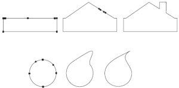
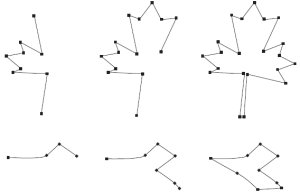
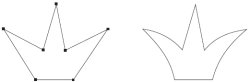
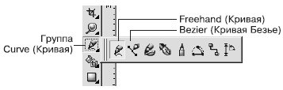
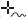
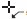
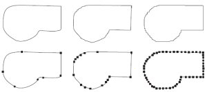
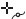
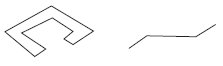
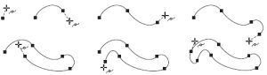

В лекции рассмотрено применение инструментов Кривая и Кривая Безье, их схожесть и различия. Приведены примеры использования этих инструментов.

Построение кривых Безье
Вы уже знаете, что кривая Безье — это прямая или кривая линия, состоящая из сегментов и узлов, расположенных на их концах. Узлы кривой Безье можно перемещать с помощью инструмента Shape (Форма) ( ), что позволяет изменять форму фигуры в целом. Узел может иметь направляющие, расположение и длину которых можно изменять с помощью соответствующих маркеров. Перемещение управляющих маркеров приводит к модифицированию внешнего вида сегментов — изменению их кривизны.
), что позволяет изменять форму фигуры в целом. Узел может иметь направляющие, расположение и длину которых можно изменять с помощью соответствующих маркеров. Перемещение управляющих маркеров приводит к модифицированию внешнего вида сегментов — изменению их кривизны.
В предыдущей лекции мы рассмотрели инструмент Shape (Форма) (), который предназначен для работы с узлами и сегментами фигур в виде прямоугольников, эллипсов или многоугольников, преобразованных в кривые Безье. Данный метод (использование фигуры-заготовки в виде прямоугольника, эллипса или многоугольника) удобен на начальных этапах освоения программы векторной графики. При этом вы изначально располагаете замкнутой линией и все, что нужно делать, — это добавить требуемое количество узлов, расположить их должным образом и задать требуемую кривизну отдельных сегментов и тип тех или иных узлов (рис. 6.1).

Рис. 6.1 Использование фигур-заготовок в виде прямоугольника и эллипса для построения более сложных фигур
Другой метод заключается в пошаговом построении фигуры, имеющей сложную форму, путем последовательного создания сегментов и узлов (рис. 6.2).

Рис. 6.2 Построение фигур сложной формы путем последовательного создания сегментов и узлов
Данный метод состоит в следующем. Сначала, используя набор прямолинейных сегментов, строят полигональное подобие будущей фигуры. Затем с помощью инструмента Shape (Форма) () над сегментами и узлами имеющегося объекта выполняют различные действия, в результате чего изображение принимает требуемый вид (рис. 6.3).

Рис. 6.3 Многоугольное подобие короны (слева) и окончательный вариант, доработанный с помощью инструмента Shape (Форма) (справа)
Описанный вариант создания объекта похож на метод, основанный на использовании фигуры-заготовки. Отличие состоит лишь в том, что в этом случае полигональная заготовка фигуры строится сразу, в то время как при использовании фигуры-заготовки для получения полигональной фигуры необходимо соответствующим образом добавить и разместить узлы.
Для построения кривых предназначены инструменты Freehand (Кривая) ( ) и Bezier (Кривая Безье) (
) и Bezier (Кривая Безье) ( ), входящие в группу Curve (Кривая)
), входящие в группу Curve (Кривая)

Рис. 6.4 Инструменты для построения кривых
Инструмент Freehand (Кривая)
Инструмент Freehand (Кривая) позволяет создавать прямолинейные и криволинейные отрезки.
Чтобы построить прямолинейный отрезок с помощью этого инструмента, необходимо выполнить такие действия.
-
Выбрать инструмент Freehand (Кривая) ().
-
Перевести указатель () на рабочую область и щелкнуть кнопкой мыши.
-
Переместить указатель в то место, где необходимо создать второй узел, и щелкнуть кнопкой мыши.

ПРИМЕЧАНИЕ. Данный способ позволяет построить одиночный прямолинейный отрезок.
СОВЕТ. Если вы хотите продолжить построение, то для этого необходимо расположить указатель мыши на одном из концевых узлов построенного контура и, когда указатель примет вид , щелкнуть основной кнопкой мыши. После этого нужно переместить указатель мыши в то место, где необходимо создать следующий узел, и снова щелкнуть основной кнопкой мыши. Таким образом можно построить полигональную линию.
Чтобы построить криволинейный контур с помощью инструмента Freehand (Кривая), необходимо действовать следующим образом.
-
Выбрать инструмент Freehand (Кривая) ().
-
Перевести указатель () на рабочую область.
-
Нажать кнопку мыши и, не отпуская ее, перетащить мышь, создавая кривую.
Гладкость линии итоговой кривой можно задать с помощью параметра Freehand Smoothing (Сглаживание кривой), расположенного справа на панели свойств при
активном инструменте Freehand (Кривая) (). Значение сглаживания кривой по умолчанию равно 100 — это дает возможность получать гладкие контуры с минимальным количеством узлов. Уменьшение значения данного параметра делает инструмент более чувствительным к движению мыши и приводит к созданию большего количества узлов при рисовании кривой (рис. 6.5).

Рис. 6.5 Фигуры, нарисованные инструментом Freehand (Кривая) при разных значениях параметр Freehand Smoothing (Сглаживание кривой): 100 — слева, 50 — в центре, 0 — справа
Инструмент Bezier (Кривая Безье)
Bezier (Кривая Безье) () — это классический инструмент, предназначенный для построения кривых Безье. Его используют для построения прямолинейных полигональных и криволинейных контуров.
Чтобы построить прямолинейный полигональный контур с помощью инструмента Bezier (Кривая Безье) (), выполните следующие действия.
-
Выберите инструмент Bezier (Кривая Безье) ().
-
Переведите указатель () на рабочую область и щелкните кнопкой мыши.
-
Переместите указатель мыши в то место, где необходимо создать второй узел, и щелкните.
-
Переместите указатель мыши в новое место, где необходимо создать следующий узел, и снова щелкните. Продолжайте выполнять эти действия до тех пор, пока фигура не будет окончательно построена (см. рис. 6.2).
СОВЕТ.Если при построении прямолинейного полигонального контура необходимо, чтобы итоговая кривая была разомкнутой, то после создания последнего узла следует выбрать инструмент Pick  (Выбор)
(Выбор)

Рис. 6.6 Прямолинейный полигональный замкнутый контур (слева) и разомкнутый (справа)
Чтобы построить криволинейный полигональный контур с помощью инструмента Bezier (Кривая Безье) (), необходимо выполнить такие действия.
-
Выберите инструмент Bezier (Кривая Безье) ().
-
Переведите указатель () ( ) на рабочую область, нажмите кнопку мыши и, не отпуская ее, перетащите мышь, создав направляющую.
-
Отпустите кнопку мыши.
-
Переместите указатель мыши в то место, где необходимо создать второй узел, и, нажав и удерживая кнопку мыши, перетащите мышь, чтобы создать вторую направляющую.
-
Переместите указатель мыши в новое место, где необходимо создать следующий узел, и описанным способом создайте направляющую. Повторяйте эти действия до тех пор, пока фигура не будет окончательно построена.
При построении криволинейного полигонального контура нажатие кнопки и перетаскивание указателя мыши приводит к созданию узла и направляющей, длина которой определяет кривизну сегмента, а направление задает его выпуклость (рис. 6.7).

Рис. 6.7 Пример пошагового построения криволинейного полигонального контура
Выводы
Таким образом, сложные по форме фигуры могут быть построены с помощью инструментов Freehand (Кривая) () и Bezier (Кривая Безье) ()
Схожесть применения этих инструментов существует только при построении прямолинейных полигональных контуров — щелчками кнопки мыши вы создаете узлы, которые соединяются между собой прямолинейными сегментами.
Существенное различие проявляется при использовании этих инструментов для создания криволинейных контуров. Инструмент Freehand (Кривая) () рисует криволинейный контур, который сглаживается программой автоматически. Использование инструмента Bezier (Кривая Безье) () для построения криволинейных сегментов требует от вас хорошего знания геометрии.
Однако как бы точно ни были созданы контуры фигур, они являются лишь заготовками, которые в дальнейшем следует редактировать и модифицировать с помощью инструмента Shape (Форма) (). Перемещением, удалением и добавлением узлов можно изменять форму фигуры в целом. В свою очередь узел может иметь направляющие, расположение и размер которых изменяют с помощью соответствующих маркеров. Перемещение маркеров направляющих приводит к модифицированию внешнего вида сегментов, изменению их кривизны.